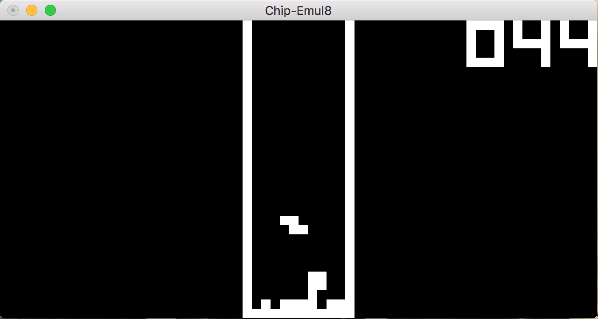
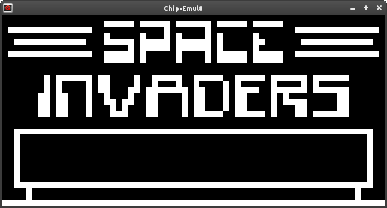

02/05/16
Chip-Emul8
Chip-Emul8 Github RepoThe Idea
So I first decided to code this Chip-8 emulator around a week ago as I've really wanted to get into emulation and as far as I was aware - writing one is the best way to learn about it. And I can definitely agree. I learnt a lot when going through this and searching the net for info, how to do certain things, using libraries etc and it has all been a great experience. The plan was that this would introduce me to the basics of emulation so I can progress to coding a Gameboy DMG-01 emulator... eventually.
What I Did
I started where most people probably would: how to code a chip 8 emulator search in Google. I found the multigesture post linked at the bottom and I got going. I modelled the CPU, added the emulators basic functions and it was all good. I then tweaked around with some of the modelling for example using the
Plans
The only thing I have planned for now is to implement sounds, that's it.
Screenshots
Mac
Linux
How To Use It
Currently I've only tested this on Mac and I believe you have to download GLUT on other OSs. First off, download the repo and open it up. Navigate to the directory and run
Mac
FYI: If you have updated to sierra, some of the GLUT library has been fully deprecated and so will no longer compile.
make build
After that, to use the emulator type
./ch8 ./<(path to your chip8 rom)>
Controls... I'm not exactly sure as to the controls for all the games but the keys will be one of: 1, 2, 3, 4, q, w, e, r, t, y, a, s, d, f, z, x, c, v. To quit the emulator press esc.
Windows
To be done..
Linux
Exact same as Mac.
Feel free to use the code so long as you give credit to me.
Here are some useful links:
About the CHIP-8:
Chip-8 Opcodes:
Writing an emulator:
Multigesture run through
Mattmik info
Emulator101
Komkon how to
ROMS:
Reading in files as byte arrays:
How to read binary file into buffer
Some other good emulators:
Eshyong's emulator
Bryangarza's emulator
Prophittcorey's emulator